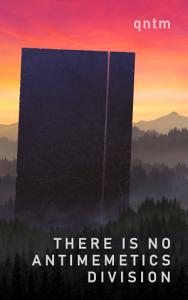

There is no Antimemetics Division, by qntm

by qntm, 2020. 
I first became aware of this book when I noticed that the good folks over at The SCP Foundation have kept themselves busy in the years since I last looked over their peerless and endlessly enthralling wiki of dry and tantalizing protocols with which to "Secure, Contain, and Protect" a catalog of creepy anomalous artifacts.
One of the arcs to break the churning surface of that crowd-sourced fictional milieu is that of the Antimemetics Division:
"An antimeme is an idea which, by its intrinsic nature, discourages people from spreading it. Think of ideas that you wouldn't share - passwords, taboos, shameful secrets.
Anomalous antimemes are another matter entirely. How do you contain something you can't record, or remember? How do you fight an enemy when you can never even know you're at war?
Welcome to the Antimemetics Division.
No, this is not your first day."
Intrigued, I started clicking around, and as is the way of SCP, discovered many hours had passed. Shortly afterwards, I realized the arc has been collected into this book.
Occasional SCP entries, in the format we know and love, intertwine a short but intense tale of memetic hazards, populated by a few of the Division's finest - those rare individuals who can go from the standing start of a hint that their memories can't be trusted, to a well-executed plan based upon a stack of assumptions about what might be needed, and what might already have been done that they can count upon, even though they no longer remember any of it, without ever retaining any knowledge of their situation, or what they're up against. I don't think I've ever been so impressed by the sheer depth of a character's resourcefulness and initiative.
The journey does contain world-ending hellscapes, with some gore, which might not be everyone's cup of tea. But it's short and somehow manages to stay light in tone, so isn't emotionally arduous on that front.
Probably my favorite fiction of the year.
For those like me with an epub fetish, you can buy There is No Antimememtics Division in many formats, including Amazon links, EPUBs, or free-to-read online, at the author's site.
Comments
Comments powered by Disqus